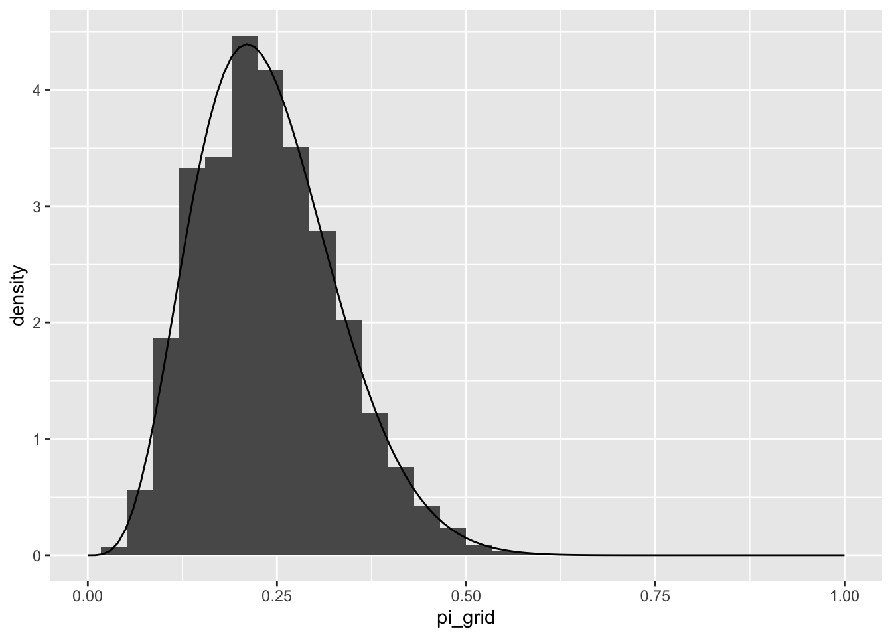
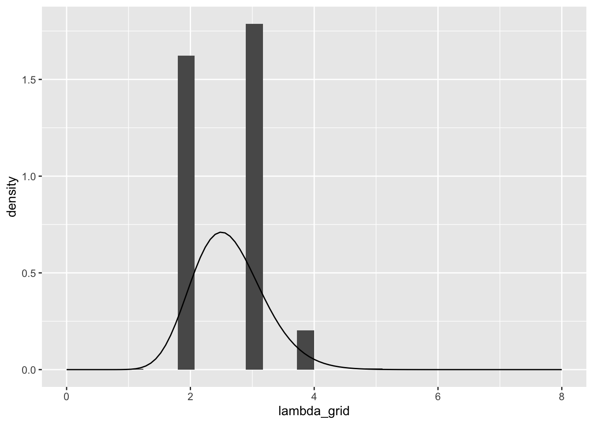
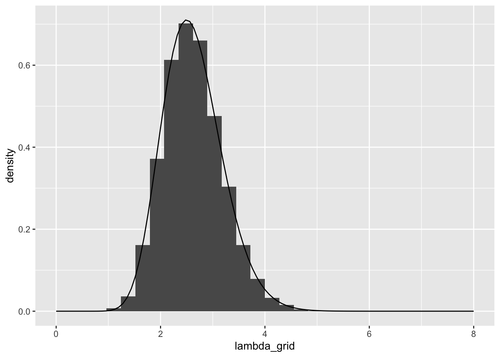
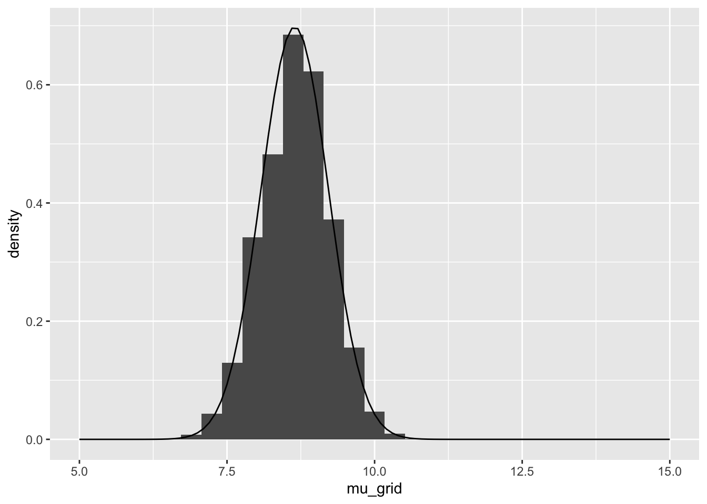

# Load packages
library(tidyverse)
library(janitor)
library(rstan)
library(bayesplot)2 Solutions to Chapter 06 Exercises
DISCLAIMER: please note that these are not the official solutions, just some stuff from my head with a very limited knowledge. So proceed with caution and verify. Also please do me a favor by letting me know of the mistakes and better approaches to these exercises’ solution.
2.1 Practice: Grid approximation
Exercise 2.1 (Beta-Binomial grid approximation) Consider the Beta-Binomial model for \(\pi\) with \(Y | \pi ∼ Bin (n , \pi)\) and \(π ∼ Beta (3, 8)\). Suppose that in \(n = 10\) independent trials, you observe \(Y = 2\) successes.
- Utilize grid approximation with grid values \(π ∈ \{0 , 0.25 , 0.5 , 0.75 , 1 \}\) to approximate the posterior model of \(π\) .
- Repeat part a using a grid of 201 equally spaced values between 0 and 1.
Solution 2.1 (a).
tibble(
# Define a grid of pi values
pi_grid = c(0, 0.25, 0.5, 0.75, 1),
# Evaluate the prior and llk at each value of grid
prior = dbeta(pi_grid, 3, 8),
likelihood = dbinom(2, size = 10, prob = pi_grid),
unnormalized = prior * likelihood,
# Calculate the posterior
posterior = unnormalized / sum(unnormalized)
) %>%
# Sample from posterior
sample_n(size = 10000, replace = TRUE, weight = posterior) %>%
# Plot the histogram of posterior simulation
ggplot(aes(x = pi_grid)) +
geom_histogram(aes(y = after_stat(density))) +
# overlay the theoretical posterior for comparison
stat_function(fun = dbeta, args = list(5, 16)) +
xlim(c(0, 1))Solution 2.2 (b).
tibble(
# Define a grid of pi values
pi_grid = seq(from = 0, to = 1, length = 201),
# Evaluate the prior and llk at each value of grid
prior = dbeta(pi_grid, 3, 8),
likelihood = dbinom(2, size = 10, prob = pi_grid),
unnormalized = prior * likelihood,
# Calculate the posterior
posterior = unnormalized / sum(unnormalized)
) %>%
# Sample from posterior
sample_n(size = 10000, replace = TRUE, weight = posterior) %>%
# Plot the histogram of posterior simulation
ggplot(aes(x = pi_grid)) +
geom_histogram(aes(y = after_stat(density))) +
# overlay the theoretical posterior for comparison
stat_function(fun = dbeta, args = list(5, 16)) +
xlim(c(0, 1))
Exercise 2.2 (Gamma-Poisson grid approximation) Consider the Gamma-Poisson model for \(\lambda\) with \(Y_i|\lambda \sim Pois(\lambda)\) and \(\lambda ~ Gamma(20, 5)\) Suppose you observe \(n = 3\) independent data points \((Y_1, Y_2, Y_3) = (0, 1, 0)\).
- Utilize grid approximation with grid values \(\lambda ∈ \{0, 1, 2, \dots, 8\}\) to approximate the posterior model of \(\lambda\).
- Repeat part a using a grid of 201 equally spaced values between 0 and 8.
Solution 2.3 (a).
tibble(
lambda_grid = 0:8,
prior = dgamma(lambda_grid, 20, 5),
llk = dpois(0, lambda_grid) * dpois(1, lambda_grid) * dpois(0, lambda_grid),
unnormalized = prior * llk,
posterior = unnormalized / sum(unnormalized)
) %>%
sample_n(size = 10000, replace = TRUE, weight = posterior) %>%
ggplot(aes(x = lambda_grid)) +
geom_histogram(aes(y = after_stat(density))) +
stat_function(fun = dgamma, args = list(21, 8)) +
xlim(c(0, 8))
Solution 2.4 (b).
tibble(
lambda_grid = seq(from = 0, to = 8, length = 201),
prior = dgamma(lambda_grid, 20, 5),
llk = dpois(0, lambda_grid) * dpois(1, lambda_grid) * dpois(0, lambda_grid),
unnormalized = prior * llk,
posterior = unnormalized / sum(unnormalized)
) %>%
sample_n(size = 10000, replace = TRUE, weight = posterior) %>%
ggplot(aes(x = lambda_grid)) +
geom_histogram(aes(y = after_stat(density))) +
stat_function(fun = dgamma, args = list(21, 8)) +
xlim(c(0, 8))
Exercise 2.3 (Normal-Normal grid approximation) Consider the Normal-Normal model for \(\mu\) with \(Y_i \sim N(\mu, 1.3^2)\) and \(\mu \sim N(10, 1.2^2)\). Suppose that on \(n = 4\) independent observations, you observe data \((Y_1, Y_2, Y_3, Y_4) = ( 7.1 , 8.9 , 8.4 , 8.6)\).
- Utilize grid approximation with grid values \(\mu ∈ \{ 5 , 6 , 7 , \dots , 15 \}\) to approximate the posterior model of \(\mu\) .
- Repeat part a using a grid of 201 equally spaced values between 5 and 15
Solution 2.5 (a).
calc_llk <- function(obs, par, pdf_func, ...) {
llk <- outer(obs, par, pdf_func, ...) |>
apply(MARGIN = 2, FUN = prod)
return(llk)
}tibble(
mu_grid = 5:15,
prior = dnorm(mu_grid, 10, 1.2),
llk = calc_llk(c(7.1, 8.9, 8.4, 8.6), mu_grid, dnorm, sd = 1.3),
unnormalized = prior * llk,
posterior = unnormalized / sum(unnormalized)
) %>%
sample_n(size = 10000, replace = TRUE, weight = posterior) %>%
ggplot(aes(x = mu_grid)) +
geom_histogram(aes(y = after_stat(density))) +
stat_function(fun = dnorm, args = list(8.64697, 0.5715)) +
xlim(c(5, 15))Solution 2.6 (b).
tibble(
mu_grid = seq(5, 15, length = 201),
prior = dnorm(mu_grid, 10, 1.2),
llk = calc_llk(c(7.1, 8.9, 8.4, 8.6), mu_grid, dnorm, sd = 1.3),
unnormalized = prior * llk,
posterior = unnormalized / sum(unnormalized)
) %>%
sample_n(size = 10000, replace = TRUE, weight = posterior) %>%
ggplot(aes(x = mu_grid)) +
geom_histogram(aes(y = after_stat(density))) +
stat_function(fun = dnorm, args = list(8.64697, 0.5715)) +
xlim(c(5, 15))
2.2 Practice: MCMC
Exercise 2.4 (MCMC with RStan: Steps 1 and 2) Use the given information to (1) define the Bayesian model structure, and (2) simulate the posterior using the correct RStan syntax. You don’t need to run the code, just provide the syntax.
- \(Y|\pi \sim Bin(20, \pi)\) and \(\pi \sim Beta(1, 1)\) with \(Y = 12\).
- \(Y|\lambda \sim Pois(\lambda)\) and \(\lambda \sim Gamma(4, 2)\) with \(Y = 3\).
- \(Y|\mu \sim N(\mu, 1^2)\) and \(\mu \sim N(0, 10^2)\) with \(Y = 12.2\).
Solution 2.7 (a).
bb_model <- "
data {
int<lower = 0, upper = 20> Y;
}
parameters {
real<lower = 0, upper = 1> pi;
}
model {
Y ~ binomial(20, pi);
pi ~ beta(1, 1);
}
"
bb_sim <- stan(model_code = bb_model, data = list(Y = 12),
chains = 4, iter = 5000*2, seed = 84735)Solution 2.8 (b).
gp_model <- "
data {
int<lower = 0> Y;
}
parameters {
real<lower = 0> lambda;
}
model {
Y ~ poisson(lambda);
lambda ~ gamma(4, 2);
}
"
gp_sim <- stan(model_code = gp_model, data = list(Y = 3),
chains = 4, iter = 5000*2, seed = 84735)Solution 2.9.
nn_model <- "
data {
real Y;
}
parameters {
real mu;
}
model {
Y ~ normal(mu, 1);
mu ~ normal(0, 10);
}
"
nn_sim <- stan(model_code = nn_model, data = list(Y = 12.2),
chains = 4, iter = 5000*2, seed = 84735)